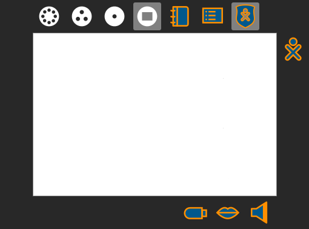

Getting to Know the Frame
Up until now we've had you navigate between Views (more on those soon) by using keyboard.
The Frame provides intuitive navigation options and information about your XO – like battery, volume, and network-status indicators.

You can access the Frame via keyboard, mouse, or touch.
Hit Next to learn how.